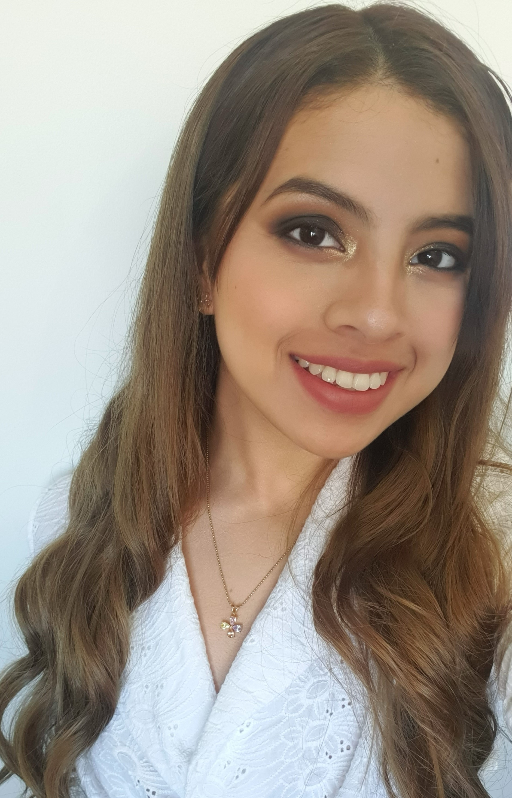

| Yamel Yamilet Burgos Lucas Estudiante |
 | |||||||
| Contacto: | ||||||||
| Fecha Nacimiento: 25/10/2000 |
Email: Example@example.com |
Telefono: 1234567 |
||||||
| A la edad de 23 años me considero una persona capaz de sobrellevar distinto tipo
de situacion. Entre mis logros estetica para embellecer a muchas mujeres, tengo experiencia de mas de 2 años en el rubro. Busco demostrar cada una de mis destrezas y cualidades. |
||||||||
Experiencia:
|
||||||||
Estudios:
|
||||||||
Cursos:
|
||||||||